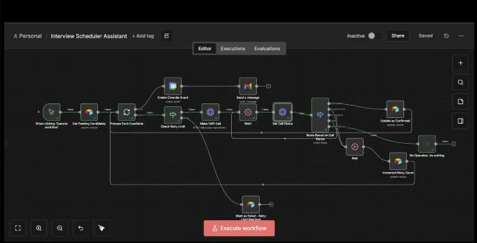

From requirements to readiness
Own full-cycle recruitment, define role-specific success criteria with department heads, and build structured assessments and selection workflows.
I’m Aminat Majekadegbe, a People Operations Lead building clear employee processes and practical HR systems. Based in Lagos, I work remotely with global teams.
Explore my work ↘Meet the person behind itView résumé ↗At Shae Group, I lead People Operations across a globally distributed employee and contractor workforce, partnering with department heads and leadership to turn business needs into workable people processes.
See my career progression ↓Own full-cycle recruitment, define role-specific success criteria with department heads, and build structured assessments and selection workflows.
Own the performance cycle: measurable KPIs, 90-day check-ins, six-month probation reviews, self-assessments, manager evaluations, and KPI realignment.
Design onboarding and offboarding frameworks, policies, SOPs, and reporting. Support employee relations and contractor lifecycle processes.
Open the artefacts. Watch the workflow. Try the product. Selected work with direct access to what I’ve built.
 ACTUAL PROJECT ARTEFACT
ACTUAL PROJECT ARTEFACT Employee records, attendance, and leave balances connected in one Notion workspace. Built from the realities of being the only HR person in a startup.

ACTUAL PROJECT ARTEFACTA voice-assistant workflow that connects candidate records, calls, scheduling, and follow-up. Inspect the real n8n build and its outcome routing.
 ACTUAL PROJECT ARTEFACT
ACTUAL PROJECT ARTEFACT Choose a culture archetype and turn it into vocabulary, emotional pillars, and example communication. A working interface visitors can explore.
I work where people, processes, and technology meet. My path has taken me from HR research and recruitment support to high-volume employee operations, independently managing an HR function, and leading People Operations for a global team.
I care about the details that change how work feels: a clear welcome, a fair assessment, a policy someone can actually understand, a reminder that arrives at the right time.
Beyond HR, I write about practical systems, career experiences and the life happening around work. Explore my writing on Substack ↗
University of Ilorin · Best Graduating Student in Department · GPA 4.32/5.0
Global employee and contractor lifecycle, full-cycle hiring, performance management, and technology-enabled operations.
Independently managed HR; built a Notion HR system, recruitment automation, policies, and lifecycle processes.
Employee concerns, grievance processes, and records for 1,000+ employees across seven states.
High-volume recruitment support, onboarding for 300+ employees, and structured exit feedback.
Recruitment research, process mapping, and functional requirements for a job platform.
Distinct projects, clearly labelled. Follow the demo, source, or published walkthrough.
An n8n workflow connecting a new-starter welcome, Tally form submissions, document tracking and scheduled reminders. Explore the workflow image.
A personal Flask project exploring résumé enhancement, cover letters, career advice and application tracking, with Gemini and Google Sheets integrations. Explore the implementation in the repository.
A Flask dashboard, CSV-backed records, email-monitoring and sourcing services, plus a Chrome extension. A personal tool with source to inspect.
A Telegram prototype exploring conversational support for HR questions and routine requests. Open Telegram to explore the project.
New-event alerts, reminders within 30 minutes, and a daily summary. The walkthrough covers n8n routing, timezone formatting, calendar access, and message delivery.
I document what I build, what work teaches me, and the life happening around it.
The database structure, leave calculations, and practical decisions behind my small-team HRMS.
Read the guide ↗AUTOMATION · AUG 2025A step-by-step technical walkthrough, from calendar polling to reminders and daily summaries.
Read the tutorial ↗PERSONAL WRITING · MAY 2025A reflective story about quiet resilience, the weight behind outward success, and finding the courage to speak.
Read the essay ↗Workable / HireFlix / ClickUp / Notion / Airtable
n8n / Make / REST APIs / Webhooks / Google Workspace
OpenAI / Gemini / Claude / Python / Pandas / SQL fundamentals
Figma / Lucidchart / Slack / Jira / Asana / Basecamp
Always learning: IBM AI & Python programmes, Microsoft Reactor, Google’s AI Agents Intensive, and recruiter automation training.
Hiring for People Operations? I bring hands-on HR ownership and practical systems building. I’m also open to focused HR systems projects—tell me about your team and what needs to work better.
Book a 30-minute call ↗Monday–Friday · 10am–4pm Lagos time · Google Meet